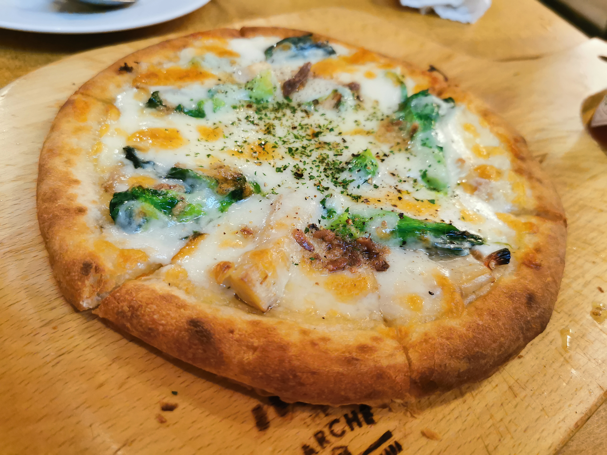

Home
Margherita Pizza

Description
Margherita Pizza is a classic Italian pizza known for its simple ingredients and fresh flavours.It is traditionally made with a thin pizza crust topped with
tomato sauce, fresh mozzarella cheese, and basil leaves. A drizzle of olive oil adds richness and enhances the flavour of the toppings.
The pizza is baked at a high temperature until the crust becomes golden and crisp, the cheese melts, and the tomato sauce becomes fragrant.
The combination of red tomato sauce, white mozzarella, and green basil gives Margherita Pizza its distinctive appearance, inspired by the colours of the Italian flag.
Ingredients
For the pizza dough
- 2 cups all-purpose flour
- 1 teaspoon instant yeast
- 1 teaspoon sugar
- ¾ teaspoon salt
- ¾ cup warm water, approximately
- 1 tablespoon olive oil
For the toppings
- ½ cup tomato pizza sauce
- 200 g fresh mozzarella cheese, sliced or torn
- A handful of fresh basil leaves
- 1 tablespoon olive oil
- A pinch of dried oregano (optional)
- Salt, to taste
Steps
- Prepare the dough: In a large bowl, combine the flour, instant yeast, sugar, and salt. Gradually add the warm water and olive oil, mixing until a dough forms.
- Knead the dough: Transfer the dough to a lightly floured surface and knead for about 8–10 minutes, until it becomes smooth and elastic.
- Let the dough rise: Place the dough in a lightly oiled bowl and cover it with a clean cloth. Leave it in a warm place for about 1–1½ hours, or until it doubles in size.
- Preheat the oven: Preheat the oven to its highest suitable temperature, ideally around 240–250°C (465–480°F). If using a pizza stone or baking steel, preheat it as well.
- Shape the pizza: Punch down the risen dough gently. Place it on a lightly floured surface and stretch or roll it into a round pizza base.
- Add the sauce: Transfer the dough to a baking tray or pizza peel. Spread the tomato sauce evenly over the base, leaving a small border around the edges.
- Add the cheese: Arrange the mozzarella pieces over the tomato sauce. Drizzle lightly with olive oil and add a pinch of oregano if desired.
- Bake the pizza: Bake for approximately 8–15 minutes, depending on your oven, until the crust is golden and the cheese is melted and bubbling.
- Add fresh basil: Remove the pizza from the oven and scatter fresh basil leaves over the top.
- Serve: Allow the pizza to cool slightly, then slice it into wedges and serve warm.
Tip: For the best Margherita Pizza, use good-quality tomato sauce and mozzarella, and avoid adding too many toppings so the simple flavours remain the focus.